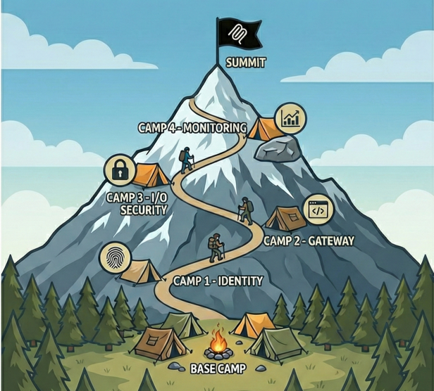

MCP SecuritySummit Workshop
Secure MCP servers in Azure through hands-on exploitation and remediation. Break things, fix them, ship production-ready code.
Begin JourneyWhy This Workshop
Learn by Breaking
Exploit intentionally vulnerable servers, then fix them with Azure-native security: vulnerable → exploit → fix → validate methodology.
OWASP-Aligned
Every technique maps to the OWASP MCP Azure Security Guide for industry-standard coverage.
Azure-Native Security
Entra ID, Key Vault, API Management, AI Content Safety, and Log Analytics — production services, not toy demos.
The Expedition Route¶

Each camp builds on the last — from unauthenticated MCP servers to enterprise-grade defense-in-depth.
Explore MCP fundamentals and witness authentication vulnerabilities in action. Your starting point for the expedition.
No Azure requiredOAuth 2.1 with PKCE, Azure Managed Identity, and Key Vault secrets management. Lock down who can access your MCP server.
Authentication · AuthorizationAPI Management gateway, Private Endpoints, and API Center governance. Control the front door to your MCP servers.
Networking · GovernancePrompt injection defense, PII detection, and Azure AI Content Safety integration. Protect what goes in and comes out.
Input validation · Content safetyLog Analytics, custom dashboards, and automated threat detection. See everything, miss nothing.
Observability · AlertingRed Team / Blue Team exercise validating all security layers end-to-end. Full integration test.
Capstone exerciseQuick Start¶
From clone to running lab in under ten minutes.
1. Clone the repository
2. Install dependencies & verify
curl -LsSf https://astral.sh/uv/install.sh | sh
python --version # 3.10+
az account show # logged in
3. Start at Base Camp
Open the Base Camp guide and follow along. The docs tell you when to deploy and test code from the repo.
First time?
Check the Prerequisites for full setup instructions and system requirements. No security expertise required — if you can write Python and navigate the Azure Portal, you're ready.
References¶
OWASP MCP Azure Security Guide — Companion guide referenced throughout MCP Specification — Official protocol documentation FastMCP Framework — Python framework used in this workshop